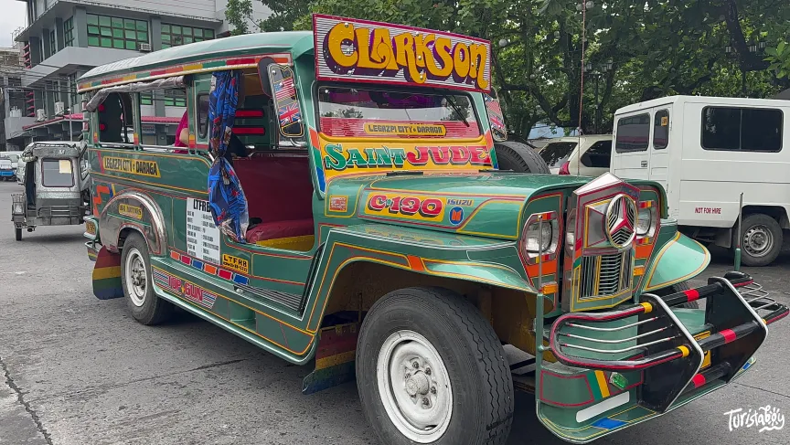
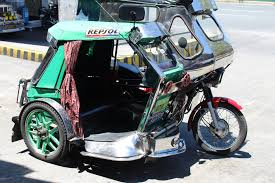
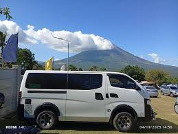

Learn the common ways to travel around Albay and discover the transportation options that can help visitors move easily, safely, and conveniently.
Transportation is an important part of every trip because it helps visitors reach tourist attractions, restaurants, hotels, and other destinations around the province. In Albay, travelers can choose from different kinds of transport depending on their budget, location, and travel needs. Some are best for short city rides, while others are more suitable for longer trips and group travel.

Jeepneys are one of the most common and affordable public transportation options in Albay. They are useful for local travel and are often used by residents and visitors going around towns and nearby areas.

Tricycles are ideal for short-distance travel, especially when going to places within the town proper, neighborhoods, markets, or terminals. They are convenient and easy to find in many parts of Albay.

Vans and shuttle services are a good choice for visitors traveling between cities, tourist spots, and terminals. They are often more comfortable for small groups and travelers carrying bags or other belongings.

Buses are helpful for longer provincial travel and for visitors coming from or going to nearby provinces and cities. They are also useful for budget-friendly travel over longer distances.
Always prepare enough cash for fares because some transportation options may not accept digital payments. It is also helpful to ask locals or hotel staff about the best routes, expected fares, and available transport in the area. If you are visiting many tourist spots in one day, planning your route early can save time and make your trip smoother and easier.
Tricycles and jeepneys are usually the most practical choices for short rides within towns, nearby attractions, and local destinations.
Vans and shuttle services are better for tourists who want a more comfortable ride, especially when traveling with companions or carrying luggage.
Buses are a useful option for longer travel and for visitors going to and from nearby provinces, terminals, and key city areas.